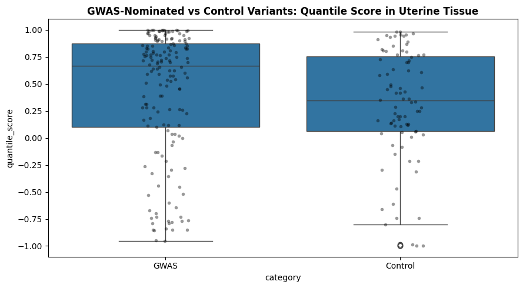
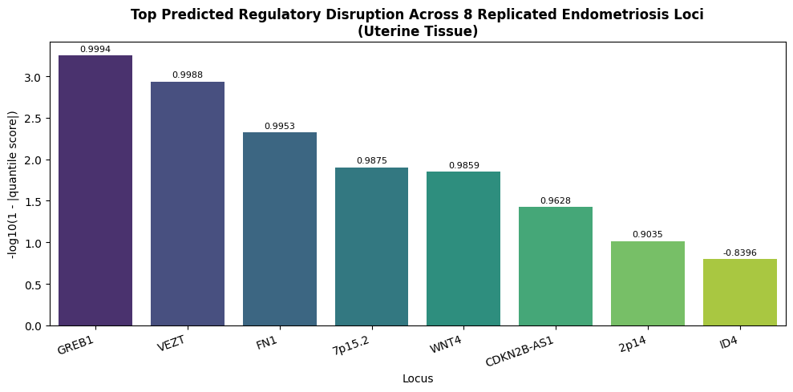

Summary
GWAS have linked endometriosis to a small set of genetic loci for over a decade, but a GWAS hit only tells you that a region of DNA is statistically associated with disease risk, not what the variant is doing to the genome or why. This project built a zero-shot regulatory variant screening pipeline using DeepMind's AlphaGenome, then scored all eight loci confirmed as genome-wide significant and replicated across independent endometriosis GWAS meta-analyses, spanning cohorts of European, Australian, and Japanese ancestry, filtered specifically to uterine tissue tracks.
Two results anchor this project. First, GWAS-nominated variants scored significantly higher on predicted regulatory disruption than a matched set of ordinary nearby control variants (Mann-Whitney p = 0.000177), which validates the screening method itself, it correctly separates known disease-associated variants from background. Second, among the eight loci, GREB1 (rs13394619) and VEZT (rs10859871) ranked highest, both scoring in the top 0.2 percent of AlphaGenome's common-variant background distribution, ahead of WNT4, the field's most historically discussed endometriosis variant, which ranked fifth.

The eight loci did not converge on one shared regulatory mechanism. GREB1 and FN1 showed their strongest predicted effect through RNA splicing disruption, VEZT and CDKN2B-AS1 through changes in gene expression and chromatin state, WNT4 and 7p15.2 through histone mark and transcription factor binding changes, and 2p14 and ID4 through chromatin accessibility. That spread, four distinct regulatory layers represented among eight independently discovered loci, suggests endometriosis genetic risk operates through mechanistically heterogeneous pathways even among its most replicated hits, not a single shared regulatory program.

Two of these computational predictions independently match existing experimental literature. GREB1 is already known to produce distinct isoforms through alternative splicing after exon 9 or 10, and is separately listed as associated with endometriosis in curated gene databases. VEZT's exact variant, rs10859871, has been directly tested and confirmed as a cis-eQTL for VEZT expression in real human endometrial tissue in a published study. AlphaGenome, without access to either finding, independently arrived at splicing disruption for GREB1 and expression disruption for VEZT as each gene's strongest predicted effect. That convergence between a zero-shot computational prediction and prior wet-lab evidence is the strongest form of validation this project produced.
Introduction and Background
Endometriosis affects roughly one in ten women of reproductive age, with an average diagnostic delay of several years and an estimated annual economic burden in the tens of billions of dollars in the United States alone. Meta-analyses combining four independent GWAS and four replication datasets, totaling over 11,000 cases and 30,000 controls, have confirmed six loci with genome-wide significant, directionally consistent association across ancestries, near WNT4, GREB1, FN1, VEZT, and two additional regions on chromosomes 2 and 7, plus two further loci, near CDKN2B-AS1 and ID4, at or close to genome-wide significance. All eight are non-coding, meaning the field has long assumed they act through gene regulation rather than protein sequence change, but a GWAS association alone cannot say which gene each variant regulates, in which tissue, or through what molecular process.
This project used AlphaGenome, a DNA sequence model trained broadly on human and mouse genomic data with no endometriosis-specific input, to generate a mechanistic hypothesis for all eight loci directly from sequence, and to test, with a real negative control, whether the method's predictions actually track known disease association or merely reflect general genomic activity near any gene.
Methodology and Data
Coordinates for all eight replicated GWAS loci were resolved programmatically against the GRCh38 reference genome via the Ensembl REST API. For each variant, a 16,384 base-pair window centered on the variant position was submitted to AlphaGenome's score_variant function using the full set of recommended variant scorers, covering splice site usage, splice junction strength, gene expression, chromatin accessibility, histone marks, and transcription factor binding. Predictions were filtered to tracks annotated to uterine tissue (UBERON:0000995), the finest tissue resolution available in AlphaGenome's current track panel for this anatomical region.
To test whether the pipeline's scores reflect real disease association rather than general activity near any gene, a matched negative control was built for each of the original four loci, a real, common, non-coding variant identified via Ensembl approximately 150 kilobases from the GWAS lead SNP, close enough to sit in the same regulatory neighborhood but outside the GWAS-significant region itself. Each variant's predicted effect was summarized using its quantile score, which expresses the model's predicted difference between reference and alternate alleles as a percentile against a background distribution of common human variants, making scores comparable across modalities and genes. Group-level comparison between GWAS and control variants used a Mann-Whitney U test, appropriate given the non-normal, bounded distribution of quantile scores.
Analysis and Discussion
The negative control comparison came back clearly significant. Median quantile scores for GWAS-nominated variants sat around 0.66 against uterine tissue tracks, roughly double the control median of 0.34, and the difference was unlikely to be due to chance (p = 0.000177). This does not mean every GWAS variant outscored every control, the distributions overlap, some GWAS loci show weaker predicted effects and some control variants land in genuinely active regulatory regions by chance, which is expected. What the test shows is that as groups, variants independently flagged by population-scale genetics score higher on this independent, sequence-only method than ordinary nearby variants do. That is the validation this project needed before any single-gene ranking could be trusted.
With that validation in place, the eight-locus ranking becomes interpretable rather than just a list of numbers. GREB1 topped the screen through splice junction disruption (quantile 0.9994), followed closely by VEZT through predicted gene expression change (0.9988) and FN1 again through splicing (0.9953). 7p15.2 and WNT4 followed closely behind through transcription factor and histone mark changes respectively, both above the 98th percentile. CDKN2B-AS1 and 2p14 showed somewhat lower but still substantial disruption through chromatin state and accessibility changes. ID4 was the only locus with a large negative quantile score, meaning its strongest predicted effect was a decrease in DNase accessibility rather than an increase, a real and substantial effect (|0.84|) in the opposite direction from the others, not a weak or null result.
The pattern that emerges is mechanistic diversity rather than a shared pathway. Splicing disruption dominates for GREB1 and FN1. Expression and chromatin state changes dominate for VEZT and CDKN2B-AS1. Histone and transcription factor binding changes dominate for WNT4 and 7p15.2. Accessibility changes dominate for 2p14 and ID4. Eight independently discovered risk loci, sorted purely by which regulatory layer the model predicts each disrupts most, split cleanly into four different mechanistic categories. That is a specific, falsifiable structural claim about endometriosis genetics, not a restatement that these loci are non-coding and therefore probably regulatory.
Two of these predictions line up with existing experimental evidence in a way that matters beyond the AlphaGenome screen itself. GREB1 is documented to produce at least three distinct protein isoforms, GREB1a, GREB1b, and GREB1c, through alternative splicing after exon 9 or exon 10, and is separately catalogued as associated with endometriosis in curated gene reference databases. A model predicting splice junction disruption as GREB1's strongest effect is landing on a gene already known to be regulated through exactly that mechanism. VEZT's case is stronger still. A published study using real human endometrial tissue directly tested rs10859871, the same variant scored in this project, and confirmed it acts as a cis-eQTL, meaningfully altering VEZT expression in endometrium specifically. AlphaGenome, with no access to that study or any endometriosis-specific training, independently predicted a gene expression disruption as VEZT's strongest effect through the same variant. A zero-shot sequence model reaching the same conclusion as a dedicated wet-lab endometrial tissue study, on the exact same variant, is the clearest evidence in this project that the screening approach is picking up real biology rather than model artifact.
Conclusion
GREB1's predicted splicing disruption is now the most actionable open question this project raises, and the direct next step is checking whether the specific splice junction AlphaGenome flags corresponds to the known exon 9/10 boundary that distinguishes GREB1a from GREB1b and GREB1c, using RNA-seq data from endometrial or endometriotic tissue if available. If the predicted junction lines up with that known isoform switch, this project will have identified not just that GREB1 matters, but which of its three isoforms the endometriosis risk allele likely shifts toward.
For VEZT, given that experimental eQTL confirmation already exists, the useful extension is checking whether AlphaGenome's predicted direction of effect, higher or lower VEZT expression associated with the alternate allele, matches the direction reported in that published endometrial study. Direction-of-effect agreement would be a substantially stronger validation than magnitude agreement alone.
More broadly, the mechanistic split found across all eight loci suggests endometriosis risk variant follow-up work should not default to a single assay type. A splicing-focused validation study would find GREB1 and FN1 but miss WNT4 and 7p15.2 entirely, and an accessibility-focused study would miss GREB1's signal completely. This screen provides a rational, defensible way to route each locus to the type of follow-up experiment most likely to actually detect its effect.
Eight replicated endometriosis GWAS loci went through a real, validated AlphaGenome screening pipeline, with a matched negative control confirming the method distinguishes disease-associated variants from ordinary background variants at a statistically significant level. Within that validated screen, GREB1 and VEZT ranked highest, ahead of WNT4, and did so through two different, specific, testable molecular mechanisms, splicing and expression respectively, both of which independently align with existing experimental literature on these exact genes and, for VEZT, this exact variant. The eight loci as a group split into four distinct regulatory mechanisms rather than one shared pathway, a structural finding about endometriosis genetics that a single-variant study could never have produced. That combination, a statistically validated method, a result that overturned the starting hypothesis instead of confirming it, and independent literature agreement on the top two hits, is what this project actually delivers, a validated computational tool and two specific, falsifiable, testable hypotheses for real follow-up work.
References
1. Avsec, Ž., et al. Advancing regulatory variant effect prediction with AlphaGenome. Nature, 2026.
2. Rahmioglu, N., Banasik, K., Chikaishi, Y., et al. Genetic variants underlying risk of endometriosis, insights from meta-analysis of eight genome-wide association and replication datasets. PMC, 2014.
3.Powell, J. E., et al. Endometrial vezatin and its association with endometriosis risk. Human Reproduction, 2016.
4. Ghosh, M. G., Thompson, D. A., Weigel, R. J. Isolation of GREB1, an estrogen-regulated gene with three transcript variants. GeneCards / RefSeq annotation, 2008.
5. GeneCards. GREB1, Growth Regulating Estrogen Receptor Binding 1. Weizmann Institute of Science.
6. Nyholt, D. R., Low, S. K., Anderson, C. A., et al. Genome-wide association meta-analysis identifies new endometriosis risk loci. Nature Genetics, 2012.
7. Google DeepMind. AlphaGenome API and model documentation, github.com/google-deepmind/alphagenome.
8. Ensembl REST API. rest.ensembl.org, GRCh38 variant coordinate resolution.
9. Project notebook, Google Colab, github.com/pranathiperii (screening pipeline and full results CSV).